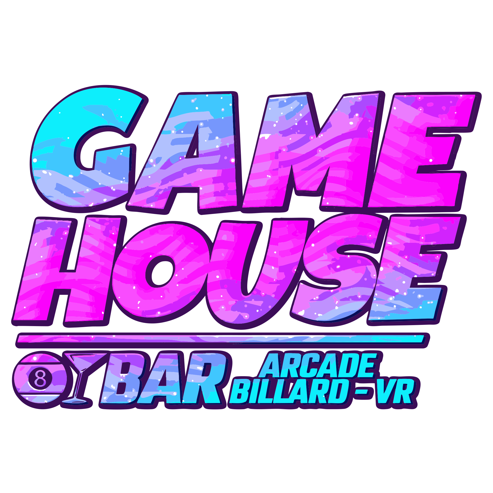
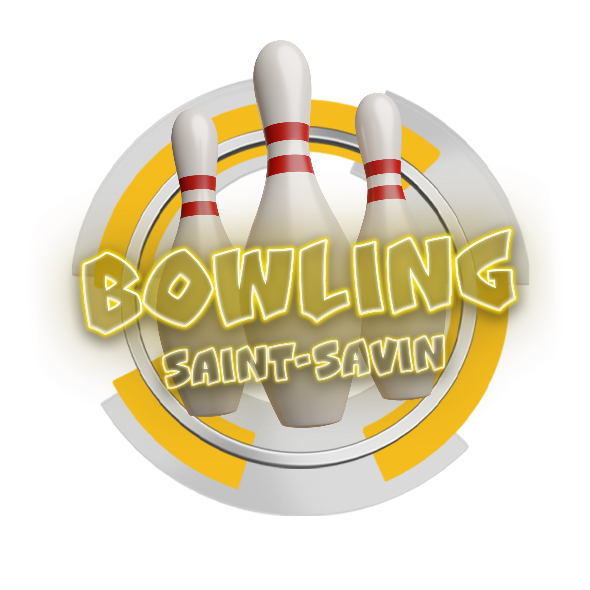

Découvrez la Fun Card – votre passeport pour le plaisir sans limite !
Avec votre Fun Card rechargeable, profitez d’un accès à tout ce que vous aimez : jeux, boissons, snacks et bien plus encore.
Simple, rapide et pratique – rechargez-la à tout moment et laissez la magie opérer !
Plus besoin de monnaie, plus de stress… juste du fun à volonté !
Obtenir ma Funcard !Comment ça marche ?
- Je choisis mon budget sur la borne
- La borne délivre la Fun Card
- Je m’amuse sans limite !
Où utiliser votre Funcard ?
Profitez des avantages de votre carte dans toutes nos entreprises partenaires :
- 
- 
-